Các Giao thức Distance-Vector
Phác thảo Thuật toán
Trong phần này, chúng ta sẽ thiết kế một distance-vector protocol, là một trong ba loại thuật toán định tuyến (cùng với link-state (trạng thái liên kết) và path-vector (vector đường đi)).
Các giao thức distance-vector có một lịch sử lâu đời trên Internet và ARPANET (tiền thân của Internet). Giao thức distance-vector tiêu biểu là Routing Information Protocol (RIP) (Giao thức Thông tin Định tuyến), và giao thức D-V mà chúng ta sẽ thiết kế có nhiều điểm tương đồng với RIP.
Để có được một số trực giác về giao thức định tuyến mà chúng ta sẽ nghiên cứu trong phần này, hãy xem xét mạng sau đây.
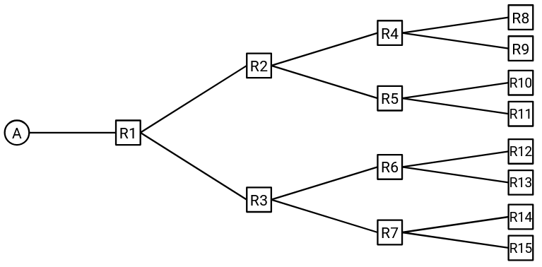Để bắt đầu, forwarding table của mọi router đều trống. Mục tiêu của chúng ta là điền vào các forwarding table của mọi router, sao cho các packet có thể được định tuyến từ bất kỳ đâu đến đích là A.
Để bắt đầu, A có thể nói với R1: "Tôi là A." Bây giờ, R1 biết cách forwarding các packet đến A.
Bây giờ R1 đã có một đường đi đến A, nó có thể nói với các neighbour của mình, R2 và R3: "Tôi là R1, và tôi có thể đến được A."
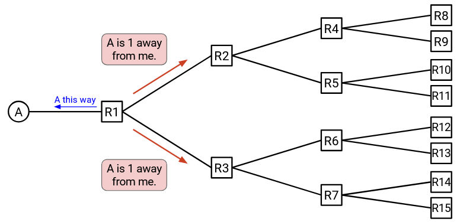Bây giờ, R2 và R3 biết rằng chúng có thể đến được A bằng cách forwarding các packet đến R1.
R2 bây giờ có thể nói với các neighbour của mình, R4 và R5: "Tôi là R2, và tôi có thể đến được A." Tương tự, R3 có thể nói với các neighbour của mình, R6 và R7: "Tôi là R3, và tôi có thể đến được A."
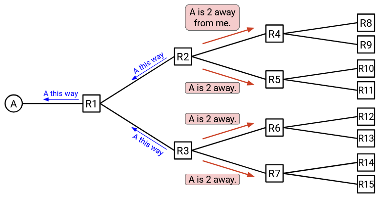Bây giờ, R4 và R5 biết rằng các packet cho A có thể được chuyển tiếp đến R2, và R6 và R7 biết rằng các packet cho A có thể được chuyển tiếp đến R3.
Quá trình tiếp tục: R4, R5, R6, và R7 mỗi người nói với neighbour của mình họ là ai, và rằng họ có thể đến được A. Đến cuối cùng, forwarding table của mọi người đều được điền đầy, và chúng ta có thể định tuyến các packet từ bất kỳ đâu trong mạng hướng về A.
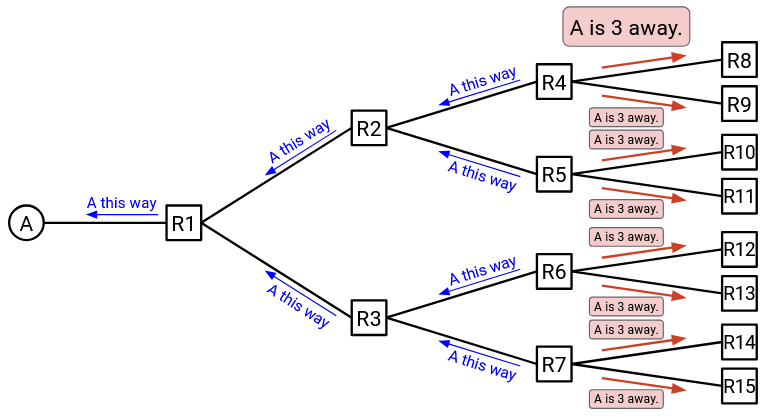Tóm lại: Khi bạn nhận được một thông báo từ ai đó nói rằng họ có thể đến được A, bạn nên ghi lại người đã gửi thông báo đó. Bây giờ, bạn có thể gửi các tin nhắn dành cho A thông qua người đó.
Ngoài ra, bây giờ bạn đã có cách để gửi tin nhắn đến A, bạn nên tạo một thông báo cho tất cả các neighbour của mình, để họ có thể gửi các tin nhắn dành cho A thông qua bạn.
Nếu có nhiều đích đến thì sao? Chúng ta có thể chạy cùng một thuật toán này lặp đi lặp lại, một lần cho mỗi đích. Forwarding table sau đó sẽ chứa nhiều mục, một mục cho mỗi đích.
Trong các ghi chú này, chúng ta sẽ tập trung vào một phần duy nhất cho đơn giản, nhưng giao thức chúng ta sẽ thiết kế có thể mở rộng cho nhiều đích.
{: .blue}
Hãy xem lại giao thức của chúng ta cho đến nay.
Đối với mỗi đích:
- Nếu bạn nghe về một đường đi đến đích đó, hãy cập nhật bảng.
- Sau đó, hãy nói cho tất cả các neighbour của bạn.
Hướng của Thông báo và Tin nhắn
Trong giao thức này, rất dễ nhầm lẫn giữa hướng mà các thông báo và tin nhắn được gửi.
Các thông báo về cách đến A bắt đầu tại A, và lan truyền ra ngoài. Ví dụ, B đã gửi một thông báo đến D, nói rằng "Tôi là B, và các tin nhắn cho A có thể được gửi qua tôi."
Ngược lại, các tin nhắn thực tế được gửi đến A lại được gửi vào trong, hướng về A. Ví dụ, một tin nhắn có thể bắt đầu tại D và được gửi đến B trên đường đến A.
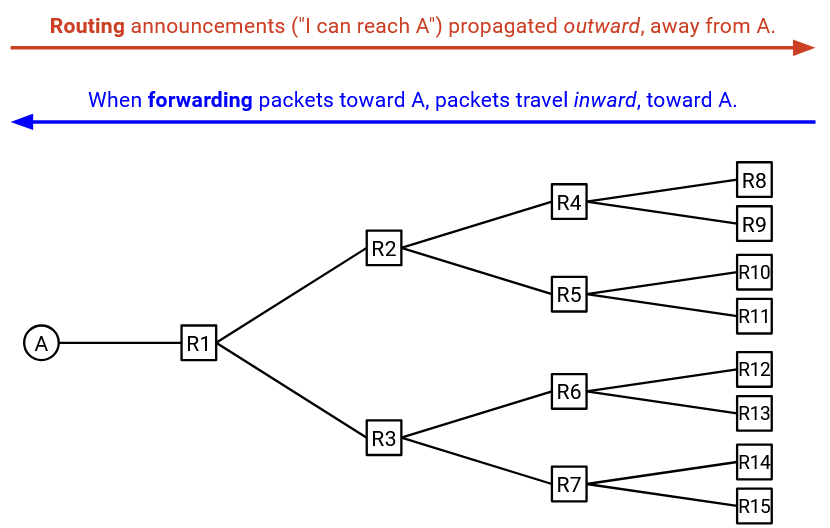Hướng của các thông báo hoàn toàn ngược lại với hướng của chính các tin nhắn! Hãy cẩn thận đừng nhầm lẫn giữa các thông báo và các tin nhắn thực tế!
Quy tắc 1: Cập nhật Bellman-Ford
Nếu có nhiều đường đi để đến A thì sao?
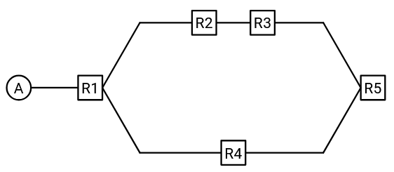Trong kịch bản này, cả R3 và R4 sẽ thông báo rằng chúng có thể đến được A. R5 nên chọn forwarding các packet đến R3 hay R4?
Hãy nhớ lại rằng mục tiêu của chúng ta là tìm các tuyến đường có chi phí thấp nhất qua mạng. Để cho phép các router chọn đường đi có chi phí thấp nhất trong số nhiều đường đang được advertise, chúng ta cũng cần bao gồm chi phí trong các thông báo.
Thông báo của R3 bây giờ nói: "Tôi là R3, và tôi có thể đến A với chi phí 3."
Thông báo của R4 bây giờ nói: "Tôi là R4, và tôi có thể đến A với chi phí 2."
Bây giờ, R5 nhận thấy rằng R4 đang cung cấp đường đi ngắn hơn, và quyết định forwarding các packet qua R4.

Chúng ta sẽ sử dụng forwarding table để ghi nhớ chi phí tốt nhất đã biết đến đích (và chặng tiếp theo tương ứng). Mỗi mục của forwarding table bây giờ cho chúng ta biết: đích, chặng tiếp theo cho đích đó, và chi phí để đến đích qua chặng tiếp theo đó.
Lưu ý: Về mặt hình thức, forwarding table lưu trữ các cặp khóa-giá trị, ánh xạ mỗi đích đến một bộ 2-tuple chứa chặng tiếp theo và khoảng cách. Chúng ta sẽ vẽ các bảng với 3 cột cho đơn giản.
R5 có thể không nghe về cả hai đường đi đồng thời, vì vậy chúng ta cần phải chính xác hơn về những gì xảy ra khi chúng ta nghe về một đường đi mới. Có ba khả năng khi chúng ta nghe về một đường đi:
-
Nếu bảng không có đường đi đến đích, hãy chấp nhận đường đi đó. Nếu tôi không có cách nào để đến A, tôi nên chấp nhận bất kỳ đường đi nào được cung cấp.
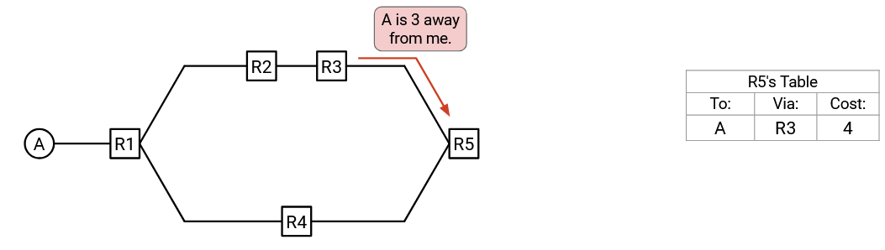 -
Nếu đường đi mới (mà chúng ta nghe về) tốt hơn đường đi tốt nhất đã biết (từ forwarding table), chúng ta nên chấp nhận đường đi mới, và thay thế đường đi cũ khỏi bảng.
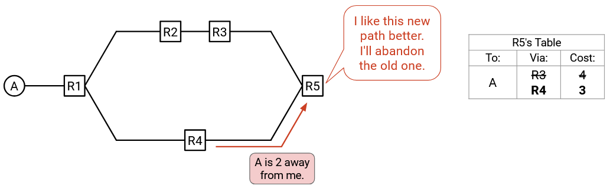 -
Nếu đường đi mới (mà chúng ta nghe về) tệ hơn đường đi tốt nhất đã biết (từ forwarding table), chúng ta nên bỏ qua đường đi mới, và tiếp tục sử dụng đường đi trong bảng.
{: .blue}
Hãy xem lại giao thức của chúng ta cho đến nay.
Đối với mỗi đích:
- Nếu bạn nghe về một đường đi đến đích đó, hãy cập nhật bảng nếu:
- Đích không có trong bảng.
- Chi phí được advertise tốt hơn chi phí tốt nhất đã biết.
- Sau đó, hãy nói cho tất cả các neighbour của bạn.
Làm thế nào để chúng ta biết một đường đi mới là tốt hơn hay tệ hơn? Chúng ta phải cẩn thận, bởi vì không phải tất cả các chi phí liên kết đều giống nhau. Khi ai đó advertise một đường đi, chi phí qua đường đi đó thực sự là tổng của hai con số: Chi phí liên kết từ bạn đến neighbour, cộng với chi phí từ neighbour đến đích (như được advertise bởi neighbour).
Như một ví dụ cụ thể, giả sử chúng ta nghe: "Tôi là R1, và A cách tôi 5." Chi phí của đường đi mới này thực sự là 1 (chi phí liên kết từ chúng ta đến R1), cộng với 5 (chi phí từ R1 đến A, từ advertise), là 6.
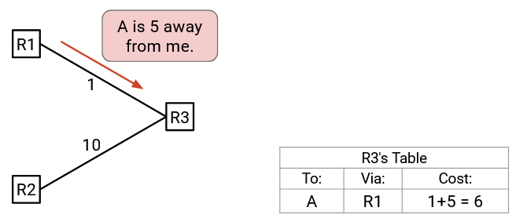Sau đó, chúng ta có thể nghe: "Tôi là R2, và A cách tôi 3." Sẽ là không chính xác nếu chỉ nhìn vào chi phí trong advertise. Trong trường hợp này, chi phí của đường đi mới thực sự là 10 (chi phí liên kết từ chúng ta đến R2), cộng với 3 (chi phí từ R2 đến A, từ advertise), là 13. Chi phí này không tốt hơn chi phí tốt nhất đã biết của chúng ta là 6, vì vậy chúng ta không cập nhật bảng. Các packet vẫn được chuyển tiếp đến R1.
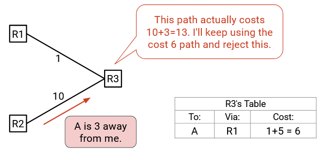{: .blue}
Hãy xem lại giao thức của chúng ta cho đến nay.
Đối với mỗi đích:
- Nếu bạn nghe về một đường đi đến đích đó, hãy cập nhật bảng nếu:
- Đích không có trong bảng.
- Chi phí được advertise, cộng với chi phí liên kết đến neighbour, tốt hơn chi phí tốt nhất đã biết.
- Sau đó, hãy nói cho tất cả các neighbour của bạn.
Đối với mỗi thông báo chúng ta nghe được, chúng ta phải so sánh hai con số. Một con số là chi phí tốt nhất đã biết trong bảng. Con số kia là tổng của chi phí liên kết đến neighbour, cộng với chi phí được advertise từ neighbour đến đích. Nếu con số sau thấp hơn, chúng ta sử dụng đường đi mới và từ bỏ đường đi cũ.
Quy tắc 1: Thuật toán Bellman-Ford Phân tán
Phép toán này có quen thuộc không? Hóa ra, đây chính là phép toán nới lỏng từ Dijkstra's shortest paths algorithm (thuật toán tìm đường đi ngắn nhất của Dijkstra)!
Bellman-Ford (Thuật toán Bellman-Ford) là một thuật toán tìm đường đi ngắn nhất khác dựa trên phép nới lỏng làm hoạt động chính. Bellman-Ford thậm chí còn đơn giản hơn Dijkstra: Lặp đi lặp lại qua tất cả các cạnh, nới lỏng mọi cạnh, cho đến khi chúng ta có được tất cả các đường đi ngắn nhất.
Bạn có thể đã triển khai Dijkstra hoặc Bellman-Ford trước đây trong một lớp cấu trúc dữ liệu, như CS 61B tại UC Berkeley. Thật không may, đoạn mã bạn đã viết sẽ không hữu ích lắm cho giao thức định tuyến của chúng ta. Hãy nhớ rằng, giao thức định tuyến phải được phân tán, vì các router không có cái nhìn toàn cục về mạng (không có một bộ não trung tâm). Ngoài ra, các router đang hoạt động không đồng bộ. Không có ai thực thi thứ tự mà các router thực hiện các phép toán nới lỏng, hoặc thứ tự mà các router gửi đi các thông báo.
Thay vào đó, giao thức định tuyến mà chúng ta đã thiết kế là một phiên bản phân tán, không đồng bộ của thuật toán Bellman-Ford. Giao thức là phân tán, bởi vì chúng ta không yêu cầu một máy tính duy nhất chạy toàn bộ thuật toán. Thay vào đó, mỗi router đang tính toán phần câu trả lời của riêng mình (điền vào forwarding table của riêng mình) mà không thấy toàn bộ đồ thị. Giao thức là không đồng bộ, bởi vì các router đều có thể chạy thuật toán cùng một lúc, mà không cần phải kiểm soát thứ tự của các hoạt động.
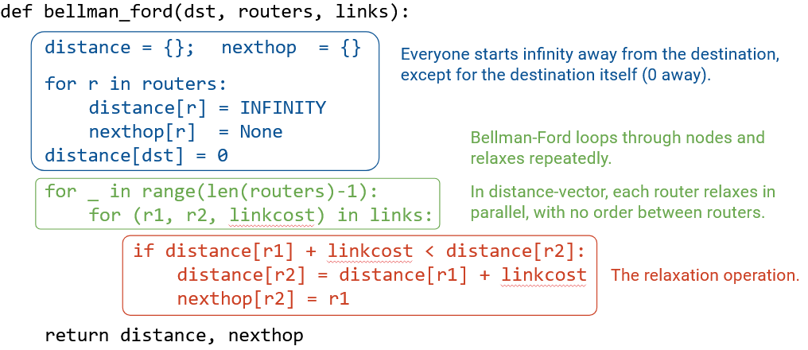Lưu ý: Mặc dù chúng ta đang hiển thị một đích duy nhất cho đơn giản, đừng quên rằng giao thức định tuyến của chúng ta sẽ có thể tìm thấy các đường đi ngắn nhất đến tất cả các đích, giống như các thuật toán Dijkstra hoặc Bellman-Ford tập trung (một máy tính).
Demo Bellman-Ford
Lưu ý về thuật ngữ: Khi chúng ta gửi một tin nhắn như "Tôi là R1, và tôi có thể đến A với chi phí 5," đến các neighbour của chúng ta, điều này thường được gọi là announcing (thông báo) hoặc advertising (quảng bá) một tuyến đường. Lưu ý rằng advertise chứa ba giá trị: đích, danh tính của bạn (để neighbour của bạn có thể chuyển tiếp đến bạn), và tổng chi phí từ bạn đến đích.
Để trình bày lại thuật toán cho đến nay một lần nữa:
Khi bạn nhận được một thông báo từ một router khác, bạn cộng chi phí từ đích đến router đó (chi phí này có trong thông báo), cộng với chi phí của liên kết từ router đó đến bạn. Nếu tổng này nhỏ hơn khoảng cách tốt nhất đã biết đến đích trong bảng của bạn, bạn thay thế mục forwarding table của mình cho đích này bằng chặng tiếp theo mới (danh tính của router khác từ thông báo) và khoảng cách mới (tổng bạn vừa tính).
Nếu bạn nhận được một thông báo từ một router khác, và đích không có trong forwarding table của bạn thì sao? Bạn không có khoảng cách tốt nhất đã biết đến đích này, bởi vì bạn chưa biết cách đến đích này. Trong trường hợp này, bạn có thể thêm một mục mới vào forwarding table của mình với đích mới, và chặng tiếp theo và chi phí từ thông báo.
Khi bạn thay đổi forwarding table của mình, điều đó có nghĩa là bạn đã khám phá ra một đường đi mới đến đích. Để lan truyền đường đi mới này đến phần còn lại của mạng, bạn sẽ cần thông báo đường đi mới này (đích, danh tính của bạn, và chi phí qua bạn) cho các router liền kề của bạn.
Với thuật toán này trong tâm trí, hãy chạy qua một ví dụ. Trong mạng này, chúng ta sẽ giả sử tất cả các cạnh có chi phí 1 vì các cạnh không được gán nhãn. Chúng ta muốn điền vào các forwarding table với các tuyến đường đến A, đích duy nhất.
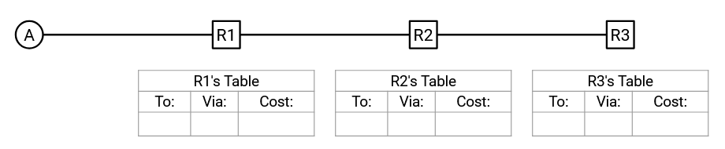Đầu tiên, sử dụng static routing (định tuyến tĩnh), chúng ta mã hóa cứng một mục trong forwarding table của R1. Để đến đích A, chặng tiếp theo là chính A, và chi phí của đường đi này là 1.
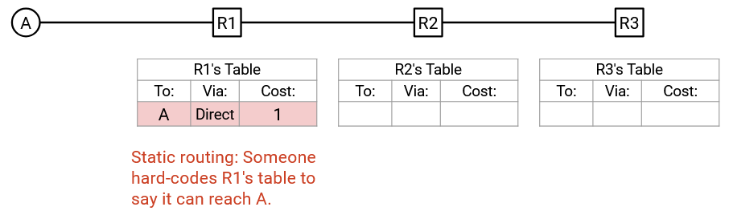Forwarding table của R1 đã thay đổi, vì vậy R1 sẽ tạo một thông báo mới với 3 giá trị: đích (A), danh tính của router (R1), và chi phí đến đích qua router này (1). Thông báo này được gửi đến tất cả các router liền kề của R1, cụ thể là chỉ R2.
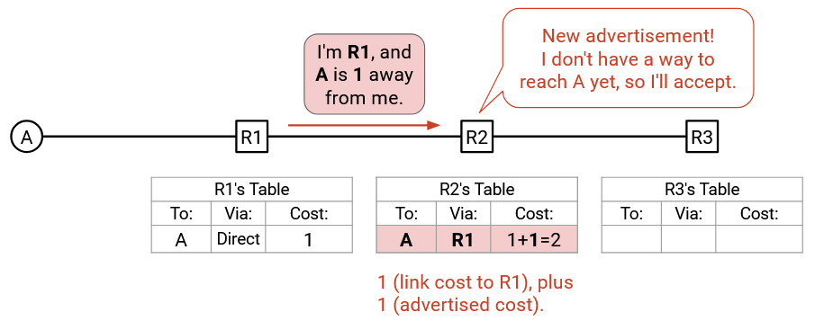R2 nhận được thông báo này và tìm trong forwarding table của nó một mục tương ứng với đích A. Forwarding table trống, vì vậy không có mục nào như vậy tồn tại. Do đó, R2 sẽ thêm một mục mới với 3 giá trị: đích (A), chặng tiếp theo (R1, từ thông báo), và chi phí đến đích qua R1 (2, tổng hợp chi phí trong thông báo và chi phí của liên kết đến R1).
Forwarding table của R2 đã thay đổi, vì vậy R2 sẽ tạo một thông báo với 3 giá trị: đích (A), danh tính của router (R2), và chi phí đến đích qua router này (2). Thông báo này được gửi đến tất cả các router liền kề của R2, cụ thể là R3 và R1.
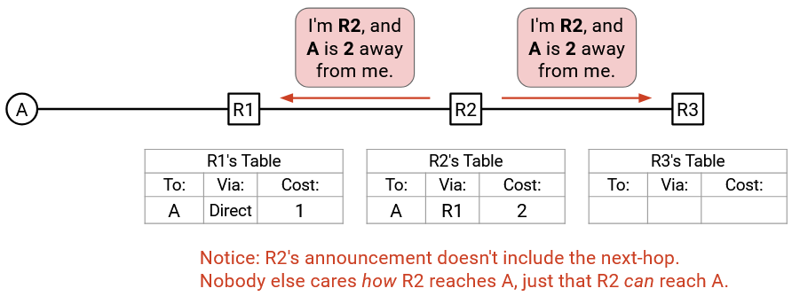Lưu ý rằng trong giao thức của chúng ta cho đến nay, các router gửi thông báo đến tất cả các neighbour của chúng. Điều này có nghĩa là thông báo của R2 cũng được gửi đến R1. Nếu điều này làm bạn bận tâm, hãy chờ xem, chúng ta sẽ xem lại nó sau.
R1 nhận được thông báo này. Theo forwarding table của R1, cách tốt nhất đã biết để đến A có chi phí 1. Đường đi qua R2 sẽ có chi phí 2 (từ thông báo của R2), cộng 1 (liên kết đến R2), tổng cộng là 3. Đây là một cách tệ hơn để đến A, vì vậy R1 sẽ bỏ qua thông báo này và để forwarding table của nó không thay đổi.
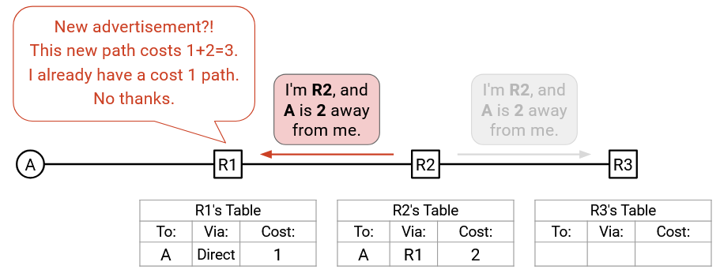R3 cũng nhận được cùng một thông báo. Forwarding table của R3 trống, vì vậy R3 sẽ cài đặt một mục mới với 3 giá trị: đích (A), chặng tiếp theo (R2, từ thông báo), và chi phí đến đích qua R2 (3, tổng hợp chi phí từ thông báo, và chi phí của liên kết R3-R2).

Theo các quy tắc của chúng ta cho đến nay, nếu bạn cập nhật forwarding table của mình, bạn cần gửi một thông báo đến tất cả các neighbour của bạn. Mặc dù chúng ta có thể thấy rằng thông báo tiếp theo này sẽ không thay đổi bất cứ điều gì, R3 không có cái nhìn toàn cục về mạng như chúng ta, vì vậy R3 sẽ gửi một thông báo đến tất cả các neighbour của nó, cụ thể là R2. Thông báo chứa: đích (A), chặng tiếp theo (R3), và chi phí qua chặng tiếp theo này (3).
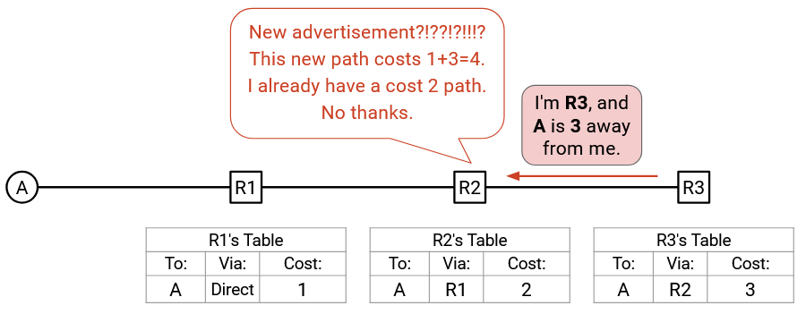R2 nhận được thông báo này. R2 biết một cách để đến A với chi phí 2, từ forwarding table. Thông báo cung cấp một đường đi với chi phí 3 (từ thông báo), cộng 1 (chi phí của liên kết R2-R3), cho tổng chi phí là 4. Điều này tệ hơn chi phí trong forwarding table, vì vậy R2 bỏ qua thông báo.
R2 không cập nhật forwarding table của nó, vì vậy nó không tạo thông báo. Tại thời điểm này, không có thông báo nào được tạo thêm, và chúng ta có thể thấy rằng mọi router đã điền vào forwarding table của nó với thông tin về cách đến A. Chúng ta cũng có thể thấy rằng các forwarding table cùng nhau tạo thành một cây phân phối hợp lệ, có chi phí thấp nhất với các tuyến đường ngắn nhất để đến A.
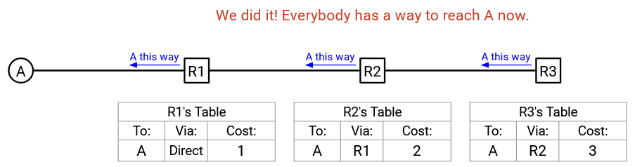Quy tắc 2: Cập nhật từ Chặng tiếp theo
Hãy nhớ lại một trong những thách thức định tuyến của chúng ta từ phần trước: Topology mạng có thể thay đổi.
Giả sử chúng ta nghe một advertise từ R2, nói rằng A cách R2 là 3. Nếu không có gì trong bảng của chúng ta, chúng ta sẽ chấp nhận advertise này và ghi lại chi phí là 1+3=4.
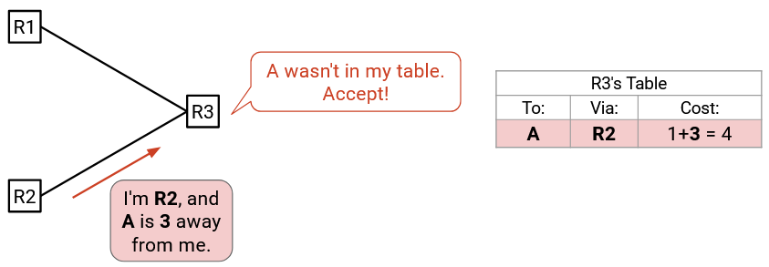Sau đó, chúng ta có thể nghe một advertise khác từ R2, nói rằng A cách R2 là 8. Từ quy tắc trước, chúng ta sẽ từ chối điều này, bởi vì chi phí được advertise (1+8=9) tệ hơn chi phí hiện tại của chúng ta (4).
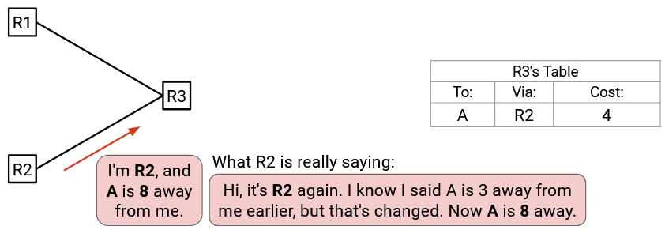Tuy nhiên, chúng ta phải cẩn thận khi từ chối advertise này. Router tạo ra thông báo (R2), cũng chính là router chặng tiếp theo mà chúng ta đang sử dụng. R2 đang cố nói: "Nếu bạn đang sử dụng tôi làm chặng tiếp theo, khoảng cách của tôi đến A không còn là 3 nữa, mà là 8." Nhưng chúng ta đã bỏ qua tin nhắn này vì chúng ta không nghĩ đến khả năng các đường đi có thể thay đổi.
Để khắc phục điều này, chúng ta phải sửa đổi quy tắc cập nhật của mình. Nếu chúng ta nghe một thông báo từ router chặng tiếp theo (router có đường đi tốt nhất đã biết mà chúng ta đang chuyển tiếp packet đến), chúng ta nên coi thông báo đó là một bản cập nhật, và chỉnh sửa forwarding table của mình. Chúng ta nên làm điều này ngay cả khi thông báo tạo ra một đường đi tệ hơn, bởi vì chặng tiếp theo có thể đang nói với chúng ta rằng chi phí đường đi đã thay đổi và trở nên tệ hơn.
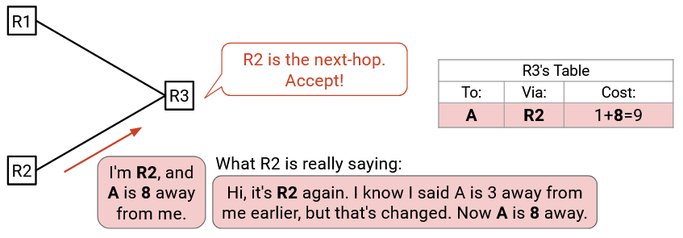Lưu ý rằng khi quy tắc mới này được áp dụng, chúng ta không cập nhật đích hoặc chặng tiếp theo trong forwarding table, chỉ có khoảng cách. Trong ví dụ, các packet tại R3 dành cho A vẫn được chuyển tiếp đến R2 (cùng đích, cùng chặng tiếp theo), nhưng chi phí qua R2 đã thay đổi.
{: .blue}
Hãy xem lại giao thức của chúng ta cho đến nay.
Đối với mỗi đích:
- Nếu bạn nghe một advertise cho đích đó, hãy cập nhật bảng nếu:
- Đích không có trong bảng.
- Chi phí được advertise, cộng với chi phí liên kết đến neighbour, tốt hơn chi phí tốt nhất đã biết.
- Quảng cáo đến từ chặng tiếp theo hiện tại.
- Sau đó, hãy nói cho tất cả các neighbour của bạn.
Để hỗ trợ các topology thay đổi, các router sẽ chạy giao thức định tuyến vô thời hạn.
Giả sử chúng ta chạy giao thức vô thời hạn, không có thay đổi topology. Ban đầu, một số phép nới lỏng sẽ thành công và các forwarding table sẽ thay đổi. Cuối cùng, thuật toán sẽ converge (hội tụ) khi chúng ta đã tìm thấy tất cả các tuyến đường có chi phí thấp nhất qua mạng. Tại thời điểm này, nếu chúng ta tiếp tục nới lỏng các cạnh, các forwarding table sẽ không thay đổi. Mọi phép nới lỏng sẽ bị từ chối, bởi vì các đường đi tốt nhất đã biết đến mục tiêu đều là các đường đi ngắn nhất, và chúng ta sẽ không bao giờ tìm thấy một đường đi tốt hơn để thay thế các đường đi ngắn nhất hiện tại. Trạng thái của mạng khi hội tụ được gọi là steady state (trạng thái ổn định).
Sau đó, giả sử chúng ta thay đổi topology (ví dụ: có thể một router bị lỗi). Khi chúng ta tiếp tục chạy giao thức, một số phép nới lỏng có thể thành công trở lại, vì chúng ta đã thay đổi đồ thị cơ bản. Sau một thời gian, cây phân phối sẽ hội tụ trở lại trên các tuyến đường có chi phí thấp nhất mới và ngừng thay đổi cho đến lần tiếp theo topology thay đổi.
Để tương tự, hãy xem xét một hồ nước. Ở steady state, không có sự xáo trộn, mặt nước hoàn toàn tĩnh lặng. Nếu bạn ném một viên đá xuống nước, sẽ có một số gợn sóng khi môi trường điều chỉnh theo sự thay đổi bạn vừa thực hiện, nhưng sau một thời gian, mặt nước sẽ trở lại hoàn toàn tĩnh lặng.
Quy tắc 3: Gửi lại
Hãy nhớ lại một thách thức định tuyến khác của chúng ta từ phần trước: Các packet có thể bị mất.
Ví dụ, hãy quay lại từ đầu ví dụ trước đó. Forwarding table của R2 và R3 trống, và R1 được cập nhật với tuyến đường được mã hóa cứng đến A. Nếu R1 đưa ra một thông báo, nhưng packet bị mất thì sao? R2 không bao giờ nghe thấy thông báo, và giao thức thất bại.
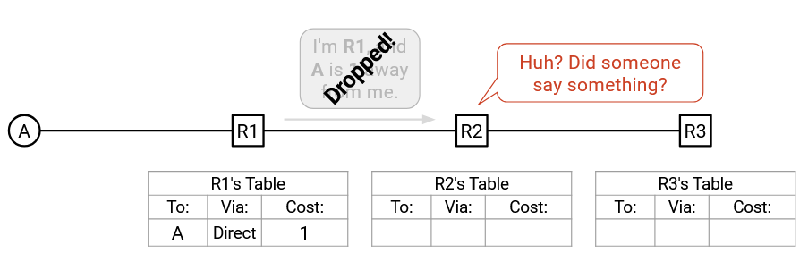Bạn có thể thử thiết kế một lược đồ phức tạp hơn để đảm bảo độ tin cậy (ví dụ: buộc người nhận gửi xác nhận), nhưng hãy sử dụng một cái gì đó đơn giản: Nếu bạn có một thông báo cần thực hiện, hãy gửi lại thông báo đó sau mỗi vài giây. Hóa ra cách tiếp cận đơn giản này hoạt động tốt với một số lựa chọn thiết kế sau này của chúng ta, và không cần gì phức tạp hơn.
Về mặt hình thức, giao thức sẽ định nghĩa một advertisement interval (khoảng thời gian quảng bá). 30 giây là một khoảng thời gian phổ biến được sử dụng trong thực tế. Nếu khoảng thời gian là X giây, thì mọi advertise phải được gửi lại sau mỗi X giây.
Miễn là chúng ta đợi đủ lâu và gửi lại packet đủ nhiều lần, liên kết cuối cùng sẽ gửi thành công advertise, miễn là liên kết hoạt động một phần thời gian. Nếu liên kết làm mất mọi packet, thì không có cách nào để advertise được gửi đi (và có lẽ một liên kết với tỷ lệ thành công 0% không nên có trong đồ thị). Cuối cùng, với đủ lần gửi lại, giao thức này vẫn sẽ hội tụ.
{: .blue}
Hãy xem lại giao thức của chúng ta cho đến nay.
Đối với mỗi đích:
- Nếu bạn nghe một advertise cho đích đó, hãy cập nhật bảng nếu:
- Đích không có trong bảng.
- Chi phí được advertise, cộng với chi phí liên kết đến neighbour, tốt hơn chi phí tốt nhất đã biết.
- Quảng cáo đến từ chặng tiếp theo hiện tại.
- Quảng bá cho tất cả các neighbour của bạn khi bảng cập nhật, và định kỳ (advertisement interval).
Lưu ý rằng việc gửi lại theo chu kỳ có thể hoạt động kết hợp với quy tắc của chúng ta từ trước đó, nơi chúng ta gửi một thông báo bất cứ khi nào forwarding table thay đổi. Các thông báo được gửi ngay sau khi có thay đổi được gọi là triggered updates (cập nhật kích hoạt).
Giao thức vẫn sẽ hội tụ nếu chúng ta chỉ gửi thông báo theo chu kỳ. Bảng thay đổi, chúng ta đợi cho đến khi hết khoảng thời gian, và gửi đi thông báo. Tuy nhiên, việc thêm triggered updates ngoài các cập nhật theo chu kỳ là một tối ưu hóa có thể giúp giao thức hội tụ nhanh hơn. Ngay khi chúng ta biết về bản cập nhật, chúng ta cũng có thể thông báo nó ngay, mà không cần đợi hết khoảng thời gian.
Với quy tắc mới này, một khi mạng hội tụ, mọi router sẽ tiếp tục gửi lại các thông báo định kỳ, nhưng không có thông báo nào sẽ được chấp nhận, bởi vì chúng ta đang ở steady state và mọi người đã có các tuyến đường có chi phí ngắn nhất.
Trong ví dụ trước đó, sau khi mạng hội tụ, R3 có thể quyết định gửi lại thông báo của mình, với đích A, chặng tiếp theo R3, và chi phí qua R3 là 3. Nhưng R2 sẽ bỏ qua thông báo này vì forwarding table của nó đã có một tuyến đường rẻ hơn với chi phí 2 (đường đi trong thông báo có chi phí 3 + 1 = 4).
Quy tắc 4: Hết hạn
Hãy nhớ lại thách thức định tuyến của chúng ta từ trước đó: Topology mạng có thể thay đổi. Cụ thể, các liên kết và router có thể bị lỗi. Nếu một router bị lỗi trong mạng, tuyến đường của chúng ta có thể trở nên không hợp lệ. Router bị lỗi sẽ không cho chúng ta biết về vấn đề (vì nó đã bị lỗi), vì vậy chúng ta bị mắc kẹt với tuyến đường không hợp lệ này.
Để giải quyết vấn đề này, chúng ta sẽ cho mỗi tuyến đường (tức là mỗi mục trong bảng) một time to live (TTL) hữu hạn. Đây là một bộ đếm thời gian ngược, cho chúng ta biết chúng ta có thể giữ mục chuyển tiếp này trong bao lâu nữa.
Các cập nhật định kỳ giúp chúng ta xác nhận rằng một tuyến đường vẫn còn tồn tại. Nếu chúng ta nhận được một advertise từ chặng tiếp theo, chúng ta có thể đặt lại ("nạp lại") TTL về giá trị ban đầu của nó.
Nếu có điều gì đó trong mạng bị lỗi, chúng ta sẽ ngừng nhận các cập nhật định kỳ. Cuối cùng, TTL sẽ hết hạn. Nếu TTL hết hạn, chúng ta sẽ xóa mục đó khỏi bảng. Về mặt trực giác: Chúng ta không còn nhận được cập nhật nữa, vì vậy tuyến đường này có lẽ không còn hợp lệ.
Đây là một ví dụ về TTL đang hoạt động. Trong ví dụ này, chúng ta là R3. Tại thời điểm t=0, chúng ta nghe một thông báo: "Tôi là R2, và A cách tôi 5." Bảng của chúng ta không có mục nào cho A, vì vậy chúng ta sẽ chấp nhận đường đi này, và đặt TTL của nó là 11. Lưu ý rằng TTL này được liên kết với mục bảng cụ thể. Nếu chúng ta có nhiều mục trong bảng, mỗi mục sẽ có TTL riêng.
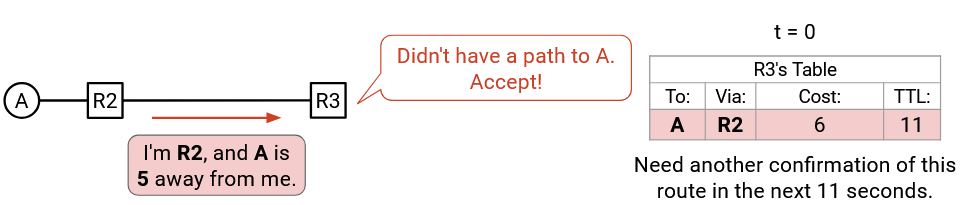TTL là 11 cho chúng ta biết rằng R2 phải gửi cho chúng ta một xác nhận khác về tuyến đường này trong 11 giây tới. Nếu không, mục bảng này sẽ bị xóa. (Lưu ý: TTL ban đầu là 11 được chọn một cách tùy ý. Trong thực tế, con số này sẽ được đặt bởi giao thức hoặc người vận hành router.)
Thời gian trôi qua. Tại t=1, TTL bây giờ là 10. Tại t=2, TTL là 9. Tại t=3, TTL là 8. Tại t=4, TTL là 7.
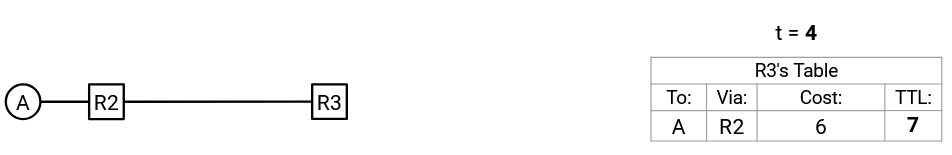Tại t=5, R2 thực hiện việc gửi lại thông báo định kỳ của mình: "Tôi là R2, và A cách tôi 5." Chúng ta nhìn vào bảng của mình và nhận ra rằng R2 là chặng tiếp theo hiện tại đến A, vì vậy chúng ta nên chấp nhận advertise này (theo Quy tắc 2) và cập nhật bảng.
Bởi vì chúng ta đã nhận được một xác nhận rằng tuyến đường này vẫn còn tồn tại, TTL có thể được đặt lại về giá trị ban đầu là 11. Chúng ta cần nhận được một xác nhận khác về tuyến đường này từ R2 trong 11 giây tới.
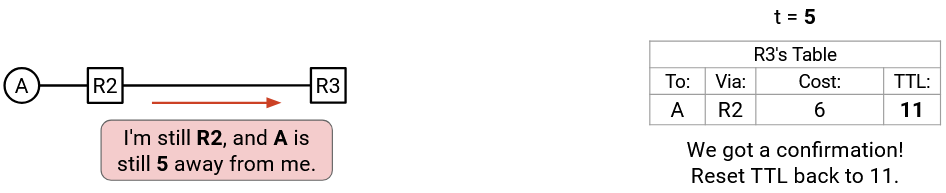Giả sử rằng một liên kết bị hỏng tại t=6, và A bây giờ không thể đến được. R2 loại bỏ tuyến đường tĩnh của nó đến A, và không còn gửi bất kỳ cập nhật định kỳ nào nữa.
Tại t=16 (11 giây sau lần cập nhật cuối cùng tại t=5), TTL trong mục bảng của chúng ta đã giảm xuống 0, vì vậy chúng ta sẽ xóa mục đó khỏi bảng của mình.
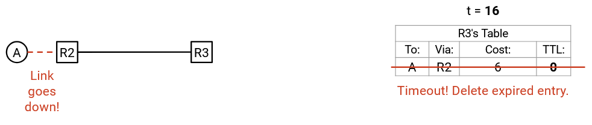{: .blue}
Hãy xem lại giao thức của chúng ta cho đến nay.
Đối với mỗi đích:
- Nếu bạn nghe một advertise cho đích đó, hãy cập nhật bảng và đặt lại TTL nếu:
- Đích không có trong bảng.
- Chi phí được advertise, cộng với chi phí liên kết đến neighbour, tốt hơn chi phí tốt nhất đã biết.
- Quảng cáo đến từ chặng tiếp theo hiện tại.
- Quảng bá cho tất cả các neighbour của bạn khi bảng cập nhật, và định kỳ (advertisement interval).
- Nếu một mục trong bảng hết hạn, hãy xóa nó.
Hãy cẩn thận đừng nhầm lẫn các bộ đếm thời gian khác nhau mà router phải duy trì.
Advertisement interval cho router biết khi nào cần quảng bá các tuyến đường cho các neighbour. Đây thường là một bộ đếm thời gian duy nhất cho toàn bộ bảng, vì vậy router quảng bá tất cả các tuyến đường trong bảng bất cứ khi nào bộ đếm thời gian advertisement interval hết hạn. Trong ví dụ trên, bộ đếm thời gian advertisement interval là 5 giây, vì R2 đã gửi advertise tại t=0 và t=5.
Ngược lại, TTL cho router biết khi nào cần xóa một mục trong bảng. Mỗi mục trong bảng có TTL độc lập riêng, đếm ngược cho mục cụ thể đó. Trong ví dụ trên, TTL ban đầu là 11 giây (đặt lại thành 11 khi chúng ta chấp nhận một advertise), và đếm ngược cho mỗi mục trong bảng.
Tại thời điểm này, chúng ta có một giao thức định tuyến gần như hoạt động đầy đủ! Hãy thêm một số tối ưu hóa để hội tụ nhanh hơn.
Quy tắc 5: Poisoning các Tuyến đường Hết hạn
Chờ đợi các tuyến đường hết hạn là chậm. Để thấy tại sao, hãy xem lại bản demo từ trước đó.
Trong ví dụ này, chúng ta là R3. Giả sử rằng đến t=5, chúng ta đã học được một tuyến đường đến A, qua R2, và tuyến đường này còn lại 11 giây TTL.
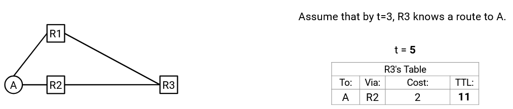Tại t=6, liên kết A-đến-R2 bị hỏng! Mục trong bảng bây giờ đã hỏng, bởi vì nếu chúng ta chuyển tiếp các packet đến R2, chúng sẽ không thực sự đến được A. Tuy nhiên, chúng ta chưa biết rằng mục này đã hỏng. Chúng ta phải đợi thêm 10 giây nữa để tuyến đường này hết hạn.
Cũng tại t=6, chúng ta nhận được một thông báo mới: "Tôi là R1, và A cách tôi 1." Chúng ta nhìn vào bảng của mình, và chúng ta đã có một cách để đến A, vì vậy chúng ta từ chối thông báo này. (Lưu ý: Điều này không quan trọng cho bản demo này, nhưng chúng ta đang giả định rằng chúng ta không chấp nhận các đường đi có chi phí bằng nhau ở đây.)
Giá như chúng ta biết rằng tuyến đường hiện tại của mình đã hỏng, chúng ta có thể chấp nhận advertise mới này ngay bây giờ. Nhưng thay vào đó, chúng ta phải chờ đợi thêm 10 giây nữa để sử dụng con đường hỏng này.
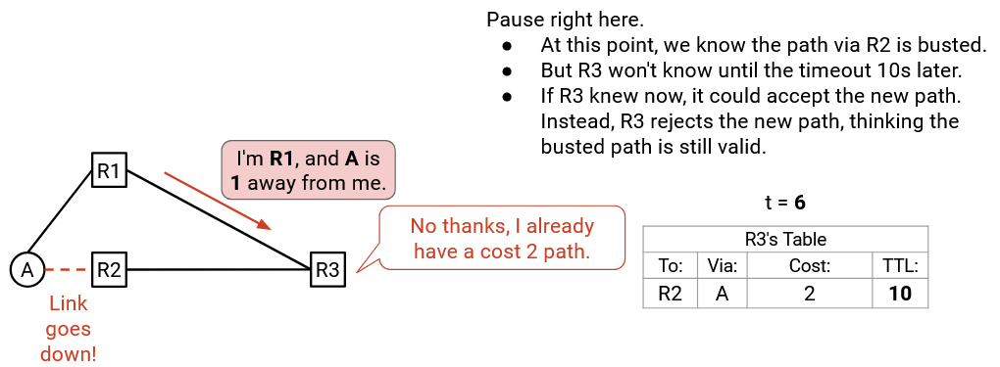Thời gian trôi qua. Đến t=11 (năm giây sau), tuyến đường hỏng vẫn còn lại 5 giây TTL.
Tại t=11, chúng ta nhận được một thông báo khác: "Tôi là R1, và A cách tôi 1." R1 đang gửi lại thông báo của mình từ trước đó. Một lần nữa, chúng ta nhìn vào bảng của mình, và chúng ta vẫn có một mục cho A, vì vậy chúng ta lại từ chối thông báo này.
Một lần nữa, giá như chúng ta có cách nào đó để biết rằng tuyến đường hiện tại của mình đã hỏng... thì chúng ta có thể chấp nhận advertise mới này. Tuy nhiên, với cách tiếp cận hiện tại của chúng ta, chúng ta phải tiếp tục sử dụng con đường hỏng trong 5 giây còn lại.
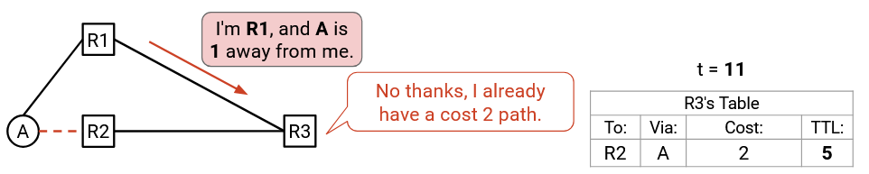Thời gian trôi qua. Đến t=16 (năm giây sau), TTL của tuyến đường hỏng cuối cùng cũng về 0, và chúng ta có thể xóa mục này khỏi bảng.
Cũng tại t=16, R1 lại gửi lại thông báo của mình: "Tôi là R1, và A cách tôi 1." Cuối cùng, bảng của chúng ta không có tuyến đường đến A (tuyến đường hỏng vừa bị xóa), vì vậy chúng ta có thể chấp nhận thông báo này.
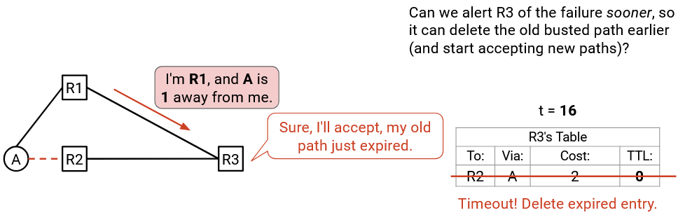Chuyện gì vừa xảy ra vậy? Tại t=6, sự cố xảy ra, và mục trong bảng của chúng ta trở nên hỏng. Tuy nhiên, vì còn lại 10 giây TTL trên tuyến đường hỏng, chúng ta phải tiếp tục sử dụng tuyến đường hỏng trong 10 giây nữa. Trong thời gian này, bất kỳ packet nào đến A sẽ bị mất, bởi vì chúng ta sẽ chuyển tiếp packet dọc theo một con đường hỏng. Ngoài ra, chúng ta có thể quảng bá tuyến đường hỏng này cho người khác, khiến họ cũng bị mất packet. Cuối cùng, như chúng ta đã thấy, chúng ta có thể từ chối các đường đi mới, nghĩ rằng con đường hỏng vẫn còn hợp lệ.
Vấn đề chính ở đây là: Khi có sự cố xảy ra, nó không được báo cáo, vì vậy chúng ta buộc phải dựa vào thời gian chờ để xóa các con đường hỏng. Điều này chậm. Có cách nào để chúng ta phát hiện sự cố sớm hơn không?
Giải pháp là poison (đánh dấu độc): Khi có sự cố xảy ra, nếu có thể, hãy advertise một cách rõ ràng rằng một con đường đã hỏng.
Nói một cách thông thường, thông báo poison mới mà R2 gửi sẽ nói: "Tôi là R2, và tôi không còn cách nào để đến A." Trong giao thức, chúng ta mã hóa thông điệp này bằng cách advertise một con đường với chi phí vô cực: "Tôi là R2, và A cách tôi vô cực." Con đường chi phí vô cực này đại diện cho một con đường hỏng.
Các con đường bị poison lan truyền giống như bất kỳ con đường nào khác. Nếu chúng ta đang chuyển tiếp các packet đến R2, và chúng ta nhận được một thông điệp poison từ R2, chúng ta cập nhật forwarding table của mình và thay thế chi phí bằng vô cực (theo Quy tắc 2). Chúng ta cũng có thể quảng bá poison chi phí vô cực này cho các neighbour của mình, để họ cũng được cảnh báo về con đường hỏng. Điều này cho phép một con đường không hợp lệ lan truyền qua mạng, điều này có thể nhanh hơn nhiều so với việc chờ đợi con đường hết thời gian.
Hãy xem lại bản demo từ trước đó, nhưng với việc poisoning khi tuyến đường hết hạn. Như trước đây, giả sử rằng đến t=5, chúng ta đã học được một tuyến đường đến A, qua R2, và tuyến đường này còn lại 11 giây TTL.
Tại t=6, liên kết A-đến-R2 bị hỏng! Mục trong bảng bây giờ đã hỏng. Tuy nhiên, chúng ta chưa biết rằng mục này đã hỏng.
Với sửa đổi của chúng ta, thay vì không nói gì, R2 gửi cho chúng ta một thông báo poison: "Tôi là R2, và A cách tôi vô cực." Theo Quy tắc 2 (chấp nhận từ chặng tiếp theo), chúng ta nhận thấy rằng R2 là chặng tiếp theo của chúng ta, vì vậy chúng ta chấp nhận thông báo này và cập nhật bảng của mình.
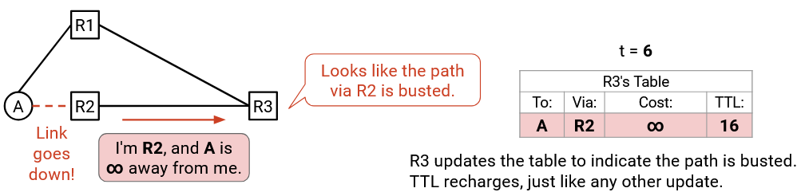Mục trong bảng của chúng ta bây giờ mã hóa thực tế rằng A thực sự không thể đến được qua R2. Mục này có TTL, giống như bất kỳ mục nào khác trong bảng. Ngoài ra, chúng ta có thể quảng bá con đường chi phí vô cực này cho các neighbour của mình, giống như bất kỳ mục nào khác. Điều này cho các neighbour của chúng ta biết rằng chúng ta cũng không còn có thể đến A.
Cũng tại t=6, sau khi cập nhật bảng, chúng ta nhận được một thông báo mới: "Tôi là R1, và A cách tôi 1." Sử dụng tuyến đường này có khoảng cách là 2 (1 từ liên kết, 1 từ advertise), tốt hơn vô cực (từ bảng). Chúng ta chấp nhận advertise này và cập nhật bảng. Bây giờ, các packet cho A được định tuyến qua R1 thay vì R2.
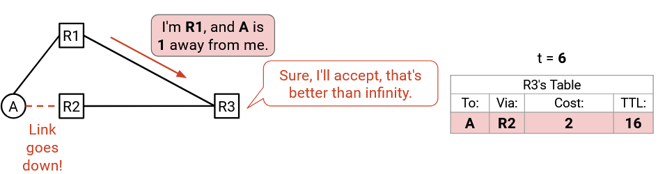Trong bản demo trước của chúng ta, tại t=6, chúng ta buộc phải đợi 10 giây để tuyến đường hỏng hết hạn. Nhờ có thông báo poison, chúng ta đã có thể vô hiệu hóa ngay lập tức tuyến đường hỏng đó tại t=6, và chấp nhận con đường mới.
Với poison, chúng ta đã có thể hội tụ trên một con đường hợp lệ sớm hơn. Giữa t=6 và t=16, các packet bây giờ sẽ đến A một cách chính xác (trong khi trong cách tiếp cận không có poison, các packet trong khoảng thời gian này sẽ bị mất). Ngoài ra, nhờ có poison, chúng ta đã tránh được việc lan truyền một tuyến đường hỏng cho người khác trong khoảng thời gian đó. Thậm chí tốt hơn, chúng ta có thể lan truyền poison cho người khác và cho họ biết rằng con đường đến A qua chúng ta (và R2) đã hỏng.
Hãy hình thức hóa các quy tắc của poison. Poison bắt nguồn từ một trong hai nguồn: một trong các tuyến đường của bạn hết thời gian, hoặc bạn nhận thấy một sự cố cục bộ (ví dụ: một trong các liên kết của bạn bị hỏng). Khi một trong những điều này xảy ra, bạn có thể cập nhật mục bảng thích hợp với chi phí vô cực, đặt lại TTL, và quảng bá poison này cho các neighbour của bạn.
Poison lan truyền như thế nào? Khi bạn nhận được một advertise poison từ chặng tiếp theo hiện tại của mình, hãy chấp nhận nó. Chặng tiếp theo của bạn đang nói với bạn rằng tuyến đường không còn tồn tại (tương tự như advertise các con đường tệ hơn trong Quy tắc 2), vì vậy bạn cần cập nhật bảng của mình. Khi bạn cập nhật bảng, bạn đặt lại TTL, giống như bất kỳ cập nhật bảng nào khác. Bạn cũng quảng bá poison cho các neighbour của mình, giống như bất kỳ cập nhật bảng nào khác, để các neighbour của bạn cũng biết về tuyến đường hỏng.
Một sửa đổi cuối cùng: Bây giờ bảng của chúng ta chứa poison, chúng ta phải cẩn thận không chuyển tiếp các packet dọc theo một tuyến đường bị poison. Nếu một mục trong bảng nói rằng A có thể đến được qua R1 với chi phí vô cực, điều này thực sự có nghĩa là A không thể đến được qua R1. Nếu chúng ta nhận được một packet dành cho A, chúng ta không thể chuyển tiếp nó đến R1.
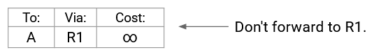{: .blue}
Hãy xem lại giao thức của chúng ta cho đến nay.
Đối với mỗi đích:
- Nếu bạn nghe một advertise cho đích đó, hãy cập nhật bảng và đặt lại TTL nếu:
- Đích không có trong bảng.
- Chi phí được advertise, cộng với chi phí liên kết đến neighbour, tốt hơn chi phí tốt nhất đã biết.
- Quảng cáo đến từ chặng tiếp theo hiện tại. Bao gồm cả các advertise poison.
- Quảng bá cho tất cả các neighbour của bạn khi bảng cập nhật, và định kỳ (advertisement interval).
- Nếu một mục trong bảng hết hạn, hãy biến mục đó thành poison và quảng bá nó.
Quy tắc 6A: Split Horizon
Hãy quay lại ví dụ yêu thích của chúng ta một lần nữa để minh họa một vấn đề khác. Giả sử chúng ta đang ở steady state, và các forwarding table có các tuyến đường ngắn nhất chính xác đến A. Các thông báo đang được gửi lại định kỳ, nhưng tất cả các thông báo đều bị từ chối vì chúng ta đang ở steady state.
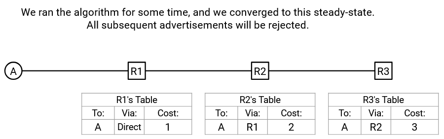Liên kết R1-R2 bị hỏng, và mục của R2 hết hạn, bởi vì R1 đã ngừng gửi các thông báo định kỳ. R2 bây giờ có một forwarding table trống. Chuyện gì xảy ra tiếp theo?
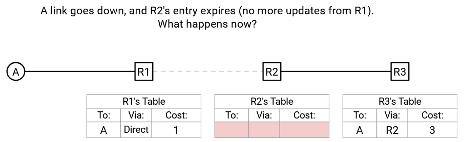Cuối cùng, R3 gửi lại thông báo của mình đến R2, với đích (A), chặng tiếp theo (R3), và chi phí qua chặng tiếp theo (3).
Bảng của R2 trống, vì vậy nó chấp nhận thông báo này và thêm đích (A), chặng tiếp theo (R3), và chi phí qua chặng tiếp theo (3 + 1 = 4).
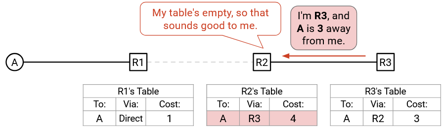Chúng ta đã tạo ra một vòng lặp định tuyến! R2 sẽ chuyển tiếp các packet đến R3, và R3 sẽ chuyển tiếp các packet đến R2.
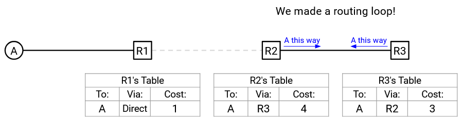Vấn đề này có thể khó nhận ra lúc đầu, vì vậy hãy diễn đạt lại nó một cách trực quan. Giả sử tôi đã chấp nhận một tuyến đường từ Alice, điều đó có nghĩa là tôi sẽ chuyển tiếp các packet đến Alice. Điều gì xảy ra nếu sau đó tôi cung cấp lại tuyến đường này cho Alice? Nếu cô ấy chấp nhận tuyến đường, cô ấy sẽ chuyển tiếp các packet đến tôi, và tôi sẽ chuyển tiếp packet trở lại cho cô ấy.
Nếu topology mạng không bao giờ thay đổi, advertise này là vô hại. Con đường tôi đang cung cấp cho Alice đi từ Alice, đến tôi, trở lại Alice. Con đường mới này chắc chắn đắt hơn vì nó thêm một vòng lặp không cần thiết, vì vậy Alice sẽ luôn từ chối advertise này.
Tuy nhiên, advertise này nguy hiểm nếu Alice mất tuyến đường của mình. Bây giờ, advertise của tôi đang lừa Alice nghĩ rằng cô ấy có thể gửi packet cho tôi. Nhưng, con đường của tôi lại dựa vào chính Alice, vì vậy nếu cô ấy chấp nhận con đường này, chúng ta sẽ tạo ra một vòng lặp nơi cô ấy gửi packet cho tôi, chỉ để tôi gửi packet ngay trở lại cho cô ấy. Vấn đề chính ở đây là: Alice nghĩ rằng con đường tôi đang quảng bá là độc lập và không bao giờ đi qua Alice. Nhưng thực tế, con đường của tôi có đi qua Alice, vì vậy nếu cô ấy chấp nhận con đường của tôi, cô ấy sẽ chuyển tiếp các packet trở lại chính mình.
Để giải quyết vấn đề này, chúng ta cần tránh cung cấp cho Alice một tuyến đường đã liên quan đến chính cô ấy. Chúng ta không bao giờ muốn Alice chấp nhận một tuyến đường gửi các packet trở lại chính mình.
Điều này dẫn chúng ta đến một giải pháp được gọi là split horizon (chân trời phân tách), nơi chúng ta không bao giờ quảng bá một tuyến đường trở lại cho người đã cung cấp tuyến đường đó cho chúng ta.
{: .blue}
Hãy xem lại giao thức của chúng ta cho đến nay.
Đối với mỗi đích:
- Nếu bạn nghe một advertise cho đích đó, hãy cập nhật bảng và đặt lại TTL nếu:
- Đích không có trong bảng.
- Chi phí được advertise, cộng với chi phí liên kết đến neighbour, tốt hơn chi phí tốt nhất đã biết.
- Quảng cáo đến từ chặng tiếp theo hiện tại. Bao gồm cả các advertise poison.
- Quảng bá cho tất cả các neighbour của bạn khi bảng cập nhật, và định kỳ (advertisement interval).
- Nhưng không quảng bá trở lại cho chặng tiếp theo.
- Nếu một mục trong bảng hết hạn, hãy biến mục đó thành poison và quảng bá nó.
Quy tắc 6B: Poison Reverse
Poison reverse (đánh dấu độc ngược) là một cách thay thế để tránh các vòng lặp định tuyến. Chúng ta có thể sử dụng split horizon hoặc poison reverse để giải quyết vấn đề từ trước đó (nhưng không phải cả hai).
Trong split horizon, nếu ai đó cho tôi một tuyến đường, tôi không quảng bá tuyến đường đó trở lại cho họ.
Ngược lại, trong poison reverse, nếu ai đó cho tôi một tuyến đường, tôi quảng bá poison một cách rõ ràng trở lại cho họ. Nói cách khác, tôi nói rõ với họ, "Đừng chuyển tiếp packet theo đường của tôi" (bởi vì tôi sẽ chỉ chuyển tiếp chúng trở lại cho bạn).
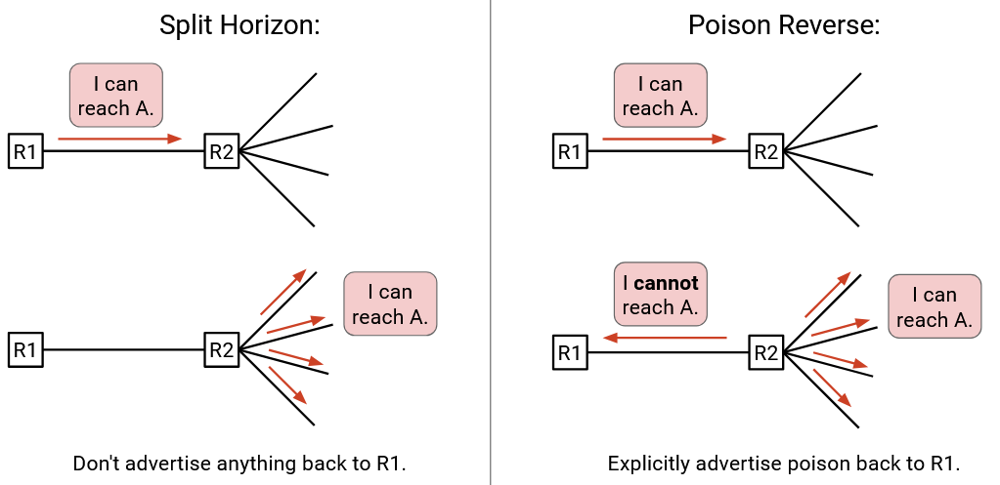Hãy xem lại bản demo, nhưng lần này sử dụng poison reverse thay vì split horizon. Như trước đây, chúng ta đạt steady state, sau đó R1-R2 bị hỏng, và R2 mất mục trong bảng của nó.
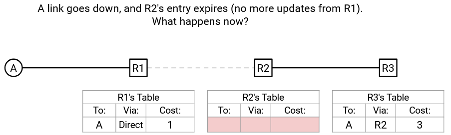Nếu chúng ta không triển khai sửa lỗi nào, đây là lúc R3 sẽ quảng bá tuyến đường của mình cho R2, và R2 sẽ chấp nhận một tuyến đường đi qua chính nó.
Nếu chúng ta triển khai split horizon, R3 sẽ không quảng bá tuyến đường của mình trở lại cho R2 tại thời điểm này.
Trong cách tiếp cận poison reverse, R3 gửi một advertise một cách rõ ràng trở lại cho R2: "Tôi là R3, và A cách tôi vô cực."
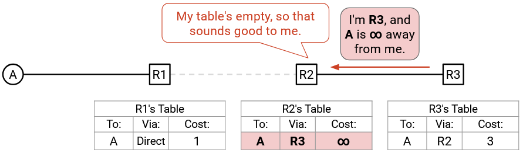R2 không có mục nào cho A (mục cũ của nó đã hết hạn), vì vậy nó chấp nhận tuyến đường bị poison mới này. Bây giờ, bảng của R2 nói rõ rằng nó không thể đến A qua R3. Chúng ta đã tránh được vòng lặp định tuyến với sự trợ giúp của poison reverse!
Trong mô hình mạng của chúng ta, cả split horizon và poison reverse đều sẽ giúp tránh các vòng lặp định tuyến. Nói chung, poison reverse có thể giúp loại bỏ các vòng lặp định tuyến sớm hơn nếu chúng từng phát sinh.
Ví dụ, giả sử chúng ta kết thúc với một vòng lặp định tuyến bằng cách nào đó, nơi R2 và R3 đang chuyển tiếp các packet cho nhau.
Trong cách tiếp cận split horizon, không có poison nào được gửi. R2 nhận được tuyến đường của mình từ R3, vì vậy nó sẽ không gửi bất cứ điều gì cho R3. Tương tự, R3 nhận được tuyến đường của mình từ R2, vì vậy nó sẽ không gửi bất cứ điều gì cho R2. Vòng lặp tồn tại cho đến khi các mục trong bảng hết hạn. Cho đến lúc đó, các packet có thể bị mất trong vòng lặp.
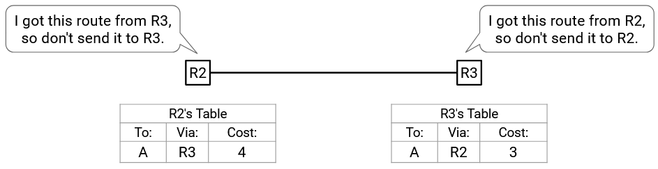Ngược lại, nếu chúng ta sử dụng cách tiếp cận poison reverse, R3 gửi poison một cách rõ ràng trở lại cho R2: "Tôi là R3, và A cách tôi vô cực." R2 chấp nhận advertise này (Quy tắc 2, tuyến đường từ chặng tiếp theo của nó), và cập nhật bảng của mình để vô hiệu hóa đường đi qua R3. Quảng cáo poison reverse ngay lập tức loại bỏ vòng lặp định tuyến.
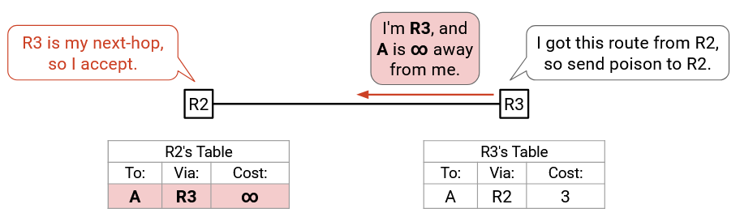{: .blue}
Hãy xem lại giao thức của chúng ta cho đến nay.
Đối với mỗi đích:
- Nếu bạn nghe một advertise cho đích đó, hãy cập nhật bảng và đặt lại TTL nếu:
- Đích không có trong bảng.
- Chi phí được advertise, cộng với chi phí liên kết đến neighbour, tốt hơn chi phí tốt nhất đã biết.
- Quảng cáo đến từ chặng tiếp theo hiện tại. Bao gồm cả các advertise poison.
- Quảng bá cho tất cả các neighbour của bạn khi bảng cập nhật, và định kỳ (advertisement interval).
- Nhưng không quảng bá trở lại cho chặng tiếp theo.
- ...Hoặc, quảng bá poison trở lại cho chặng tiếp theo.
- Nếu một mục trong bảng hết hạn, hãy biến mục đó thành poison và quảng bá nó.
Lưu ý rằng split horizon và poison reverse là hai lựa chọn, và bạn có thể chọn chính xác một để sử dụng (không phải cả hai). Hoặc bạn không nói gì trở lại cho chặng tiếp theo, hoặc bạn quảng bá poison một cách rõ ràng trở lại cho chặng tiếp theo.
Quy tắc 7: Đếm đến Vô cực
Split horizon hoặc poison reverse đã giúp chúng ta tránh các vòng lặp có độ dài 2, nơi R1 chuyển tiếp đến R2, và R2 chuyển tiếp đến R1. Nhưng chúng ta vẫn có thể gặp phải các vòng lặp định tuyến liên quan đến 3 hoặc nhiều router hơn.
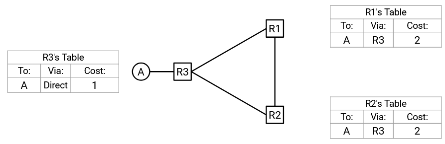Để thấy tại sao, hãy xem xét mạng này. Giả sử các bảng đạt steady-state. Cả R1 và R2 đều chuyển tiếp đến R3, R3 chuyển tiếp đến A.
Liên kết A-R3 bị hỏng! A bây giờ không thể đến được. Theo Quy tắc 5, R3 cập nhật bảng của mình để hiển thị chi phí vô cực đến A, và gửi poison này đến cả R2 và R1.
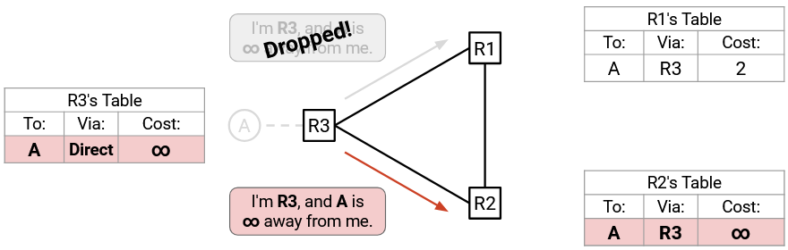R2 nhận được advertise poison và cập nhật bảng của mình (Quy tắc 2, chấp nhận từ chặng tiếp theo). Bây giờ, cả R2 và R3 đều biết rằng A không thể đến được.
Quảng cáo poison đến R1 bị mất! R1 không thấy poison, vì vậy nó vẫn nghĩ rằng nó có thể đến A qua R3. (Poison có thể được gửi lại sau, nhưng trong bản demo này, tất cả những điều tồi tệ sắp xảy ra sẽ xảy ra trước khi poison có cơ hội được gửi lại.)
Tại thời điểm này, R2 và R3 không thể đến A, nhưng R1 nghĩ rằng nó vẫn có thể đến A.
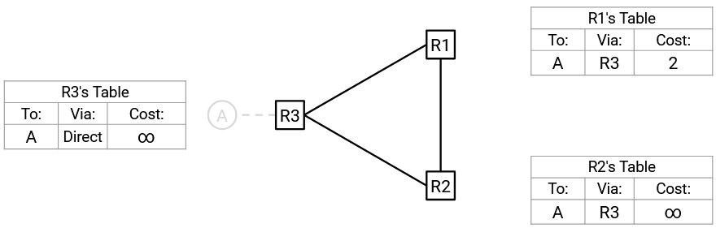Cuối cùng, R1 gửi đi một advertise. Con đường của R1 đến A là qua R3, vì vậy theo split horizon, nó sẽ không quảng bá cho R3. Tuy nhiên, R1 vẫn sẽ quảng bá cho R2: "Tôi là R1, và A cách tôi 2."
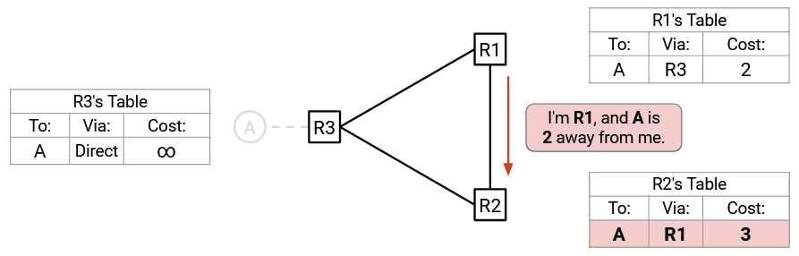R2 không có cách nào để đến A, vì vậy nó chấp nhận tuyến đường này. Bây giờ, R2 bị lừa nghĩ rằng nó có thể đến A với chi phí 3.
R2 gửi đi một advertise về tuyến đường mới của mình. Split horizon quy định rằng R2 sẽ không quảng bá trở lại cho R1, nhưng nó vẫn sẽ quảng bá cho R3: "Tôi là R2, và A cách tôi 3."
R3 không có cách nào để đến A, vì vậy nó chấp nhận tuyến đường này. Bây giờ, R3 bị lừa nghĩ rằng nó có thể đến A với chi phí 4.
Tiếp theo, R3 gửi đi một advertise cho R1 (không phải R2, theo split horizon): "Tôi là R3, và A cách tôi 4."
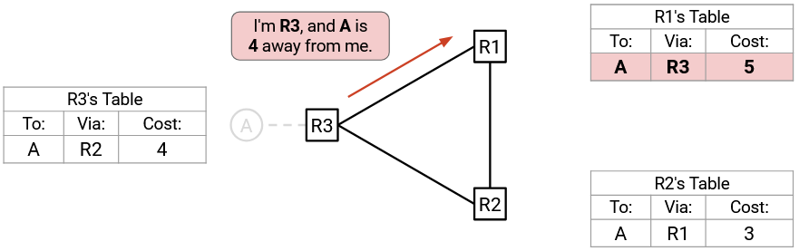R1 sẽ chấp nhận advertise này (Quy tắc 2, advertise từ chặng tiếp theo) và cập nhật bảng của mình. Bây giờ, R1 nghĩ chi phí của nó đến A là 5.
Có lẽ bạn đang thấy điều này sẽ đi đến đâu. R1 quảng bá cho R2 (không phải R3, theo split horizon): "Tôi là R1, và A cách tôi 5."
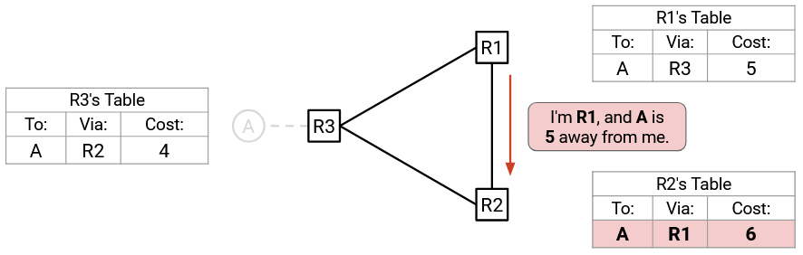R2 chấp nhận advertise này (Quy tắc 2), và nghĩ rằng nó có thể đến A với chi phí 6.
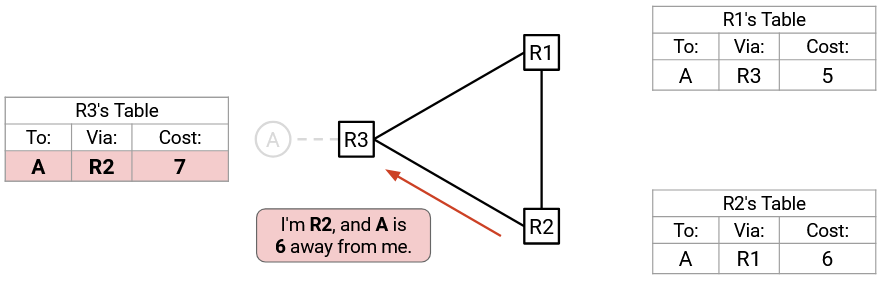R2 quảng bá một chi phí là 6 cho R3, người bây giờ nghĩ rằng nó có thể đến A với chi phí 7.
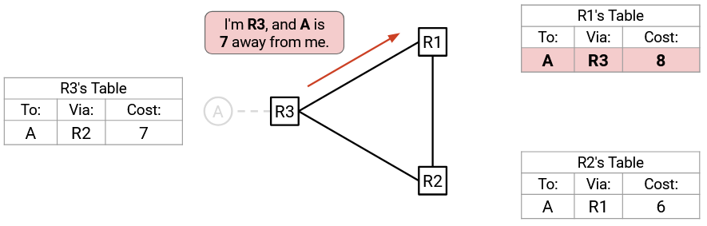R3 quảng bá một chi phí là 7 cho R1, người bây giờ nghĩ rằng nó có thể đến A với chi phí 8.
R1, R2, và R3 sẽ tiếp tục gửi các advertise cho nhau theo một chu kỳ, với chi phí ngày càng cao (tất cả đều sẽ được chấp nhận bởi Quy tắc 2). Ngoài ra, các packet cho A sẽ bị kẹt trong một vòng lặp chuyển tiếp giữa các router này.
Hãy trình bày lại vấn đề một lần nữa. Poison đã không lan truyền chính xác đến tất cả các host, vì vậy một trong các router vẫn còn một con đường hỏng trong bảng của nó. Sau đó, con đường hỏng đó được quảng bá trong một vòng lặp, và Quy tắc 2 đã khiến chi phí tiếp tục tăng, không có hồi kết.
Tại sao split horizon không cứu chúng ta? Hãy nhớ rằng, split horizon chỉ ngăn một router quảng bá trở lại cho chặng tiếp theo của nó. Nhưng trong trường hợp này, vòng lặp có độ dài 3, và chúng ta chưa bao giờ quảng bá trở lại cho chặng tiếp theo.
(Lưu ý: Poison reverse cũng không cứu chúng ta. Nếu R3 quảng bá poison trở lại cho R2, thì R2 sẽ bỏ qua poison đó, bởi vì chặng tiếp theo của R2 là R1, không phải R3.)
Đây được gọi là vấn đề count-to-infinity (đếm đến vô cực), và không có sửa lỗi nào của chúng ta cho đến nay (poison các tuyến đường hết hạn, split horizon, poison reverse) có thể giải quyết được nó.
Để giải quyết vấn đề này, chúng ta sẽ thực thi một chi phí tối đa. Trong RIP, giá trị này là 15. Tất cả các chi phí lớn hơn mức tối đa này (tức là 16 trở lên) được coi là vô cực.
Với sửa lỗi này, vòng lặp vẫn sẽ tồn tại trong một thời gian, nhưng cuối cùng, tất cả các chi phí sẽ đạt đến 16 (vô cực). Hãy xem điều này hoạt động.
Các chi phí đang tăng lên với mỗi advertise. Cuối cùng, R1 quảng bá cho R2: "Tôi là R1, và A cách tôi 14." R2 chấp nhận (theo Quy tắc 2) và cập nhật chi phí của mình lên 15.
R2 quảng bá cho R3: "Tôi là R2, và A cách tôi 15." R3 chấp nhận (theo Quy tắc 2), nhưng thay vì cập nhật chi phí của mình lên 16, chi phí được cập nhật thành vô cực.
Tiếp theo, R3 quảng bá cho R1: "Tôi là R3, và A cách tôi vô cực." R1 chấp nhận (theo Quy tắc 2), và bây giờ R1 cũng có chi phí vô cực. (Lưu ý: Quảng cáo này trông giống như poison, mặc dù vô cực bắt nguồn từ việc đếm đến vô cực thay vì phát hiện một sự cố.)
Cuối cùng, R1 quảng bá cho R2: "Tôi là R1, và A cách tôi vô cực." R2 chấp nhận (theo Quy dashboards 2), và bây giờ tất cả các router đều có chi phí vô cực.
Chúng ta đã đạt đến steady-state một lần nữa! Bất kỳ advertise nào trong tương lai đều sẽ quảng bá chi phí vô cực, và chúng sẽ không thay đổi các bảng. Cuối cùng, các mục chi phí vô cực đều sẽ hết hạn. Hoặc, nếu một tuyến đường khác đến A xuất hiện, nó sẽ thay thế mục chi phí vô cực.
{: .blue}
Hãy xem lại giao thức của chúng ta cho đến nay.
Đối với mỗi đích:
- Nếu bạn nghe một advertise cho đích đó, hãy cập nhật bảng và đặt lại TTL nếu:
- Đích không có trong bảng.
- Chi phí được advertise, cộng với chi phí liên kết đến neighbour, tốt hơn chi phí tốt nhất đã biết.
- Quảng cáo đến từ chặng tiếp theo hiện tại. Bao gồm cả các advertise poison.
- Quảng bá cho tất cả các neighbour của bạn khi bảng cập nhật, và định kỳ (advertisement interval).
- Nhưng không quảng bá trở lại cho chặng tiếp theo.
- ...Hoặc, quảng bá poison trở lại cho chặng tiếp theo.
- Bất kỳ chi phí nào lớn hơn hoặc bằng 16 đều được quảng bá là vô cực.
- Nếu một mục trong bảng hết hạn, hãy biến mục đó thành poison và quảng bá nó.
Cập nhật theo Sự kiện
Có ba trường hợp mà một router có thể muốn gửi advertise:
-
Gửi advertise khi bảng thay đổi. Đây được gọi là triggered updates. Bảng có thể thay đổi khi chúng ta chấp nhận một advertise mới, hoặc khi một liên kết mới được thêm vào (ví dụ: tuyến đường tĩnh mới), hoặc khi một liên kết bị hỏng (ví dụ: tuyến đường bị poison).
-
Gửi advertise định kỳ, một lần mỗi advertisement interval.
-
Gửi advertise khi một mục trong bảng hết hạn (và được thay thế bằng poison).
Lưu ý rằng triggered updates là một tối ưu hóa. Thay vì advertise mỗi khi bảng thay đổi, chúng ta có thể chỉ cần đợi đến advertisement interval tiếp theo để quảng bá các thay đổi. Giao thức này vẫn sẽ đúng. Tuy nhiên, triggered updates, ngoài các cập nhật định kỳ, giúp giao thức của chúng ta hội tụ trên các tuyến đường chính xác nhanh hơn, bởi vì chúng ta lan truyền thông tin mới ngay khi chúng ta biết về nó.